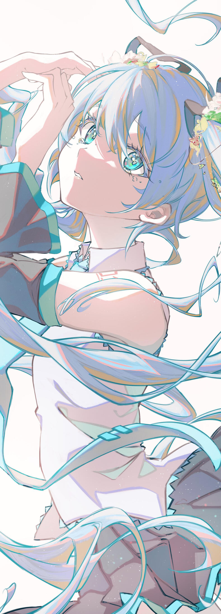
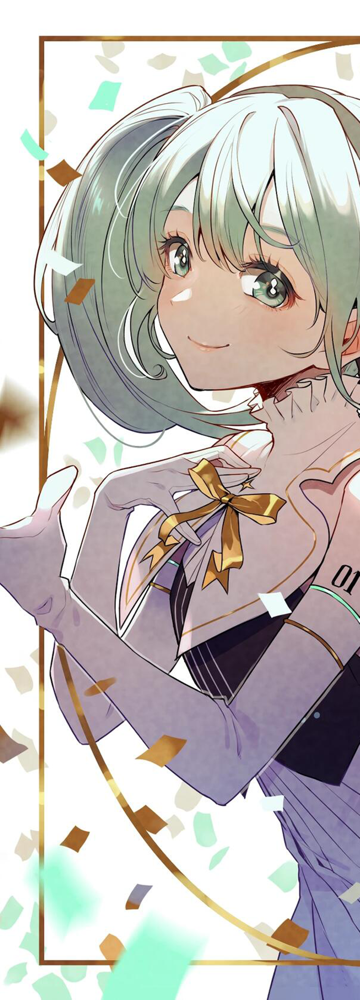
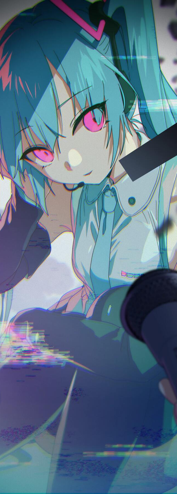
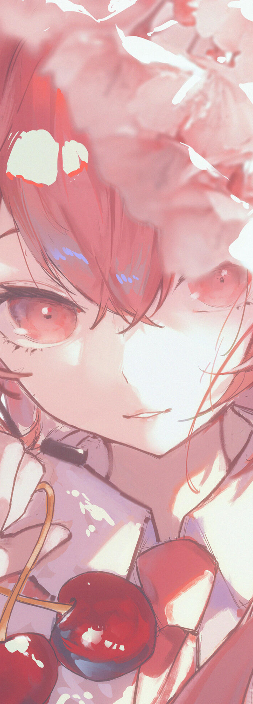
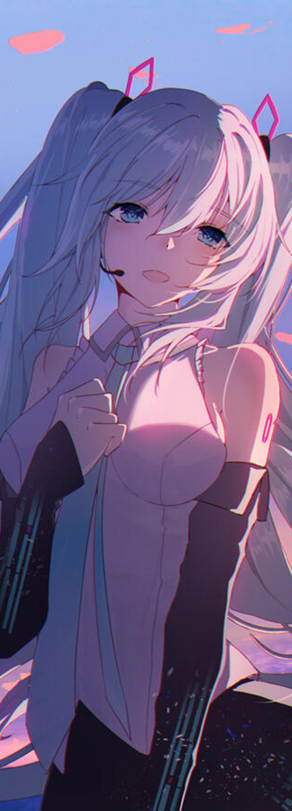
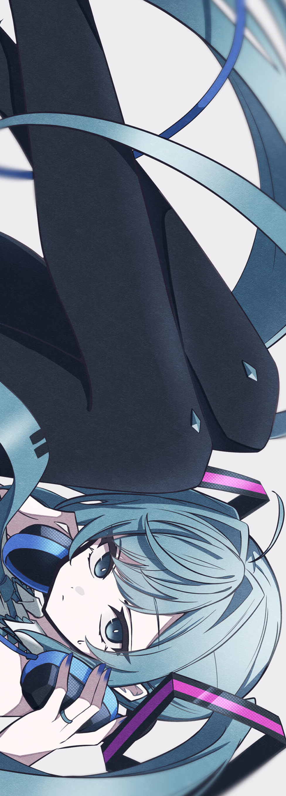

由iXima基于KEI创作的V2版人设所绘制的初音未来 初音未来发售后即大受欢迎。pixiv网站上出现大量关于初音未来的同人插画，也有大量的舞蹈、翻唱等作品在niconico动画等网络上发布，并成为话题，因此又反过来推动了初音未来的销售。到2007年9月28日，niconico动画上关于初音未来的投稿数目已经超过了2000份，2007年10月中旬超过了5000份，2007年11月24日突破一万份。早期，许多作品都是使用初音未来对知名曲目进行翻唱，但原创曲也不少，在2007年12月前后，已超过一千首。发售后三个月，有约两万五千位创作者参与了相关作品的创作。2007年11月，VOCALOID专场同人志即卖会“THE VOC@LOiD M@STER”（ボーマス）开始举办。 不少音乐业界的创作人也参与了初音未来相关作品的创作。同时，也有商业公司尝试使用初音未来进行音乐创作，例如ave;new使用了初音未来翻唱了歌曲True My Heart和snow of love。福岛县立小高商业学校使用了初音未来演唱校歌的网上公开版本[38]，2008年2月23日发布的歌曲樱之雨成为了许多毕业生的毕业歌的选择。 由于Crypton对二次创作较为开放，加之初音未来的性格等方面并没有官方设定，初音未来的形象在二次创作上有很大的空间。。 后来，为了处理衍生的诸多版权问题、规范化和培养用户的创作土壤，2009年，Crypton设立了piapro平台，制定了ピアプロ·キャラクター·ライセンス（Piapro Character License，PCL），用于针对初音未来等“Piapro Characters”有关的创作做出明确的版权界定，并提供了使用Piapro Characters创作的总体规定和具体情况下的指导，即“角色使用指南”（キャラクター利用のガイドライン）。 在Miku官方2014年末正式引入前，在中国大陆地区就已经拥有高质量的创作者和大量的粉丝，更是有猫鱼竹轮子、Rellakinoko等优秀插画作者的作品登上日本官方活动。后来，更有西名、梨伊荼、木舞、枫叶、三目YYB等作者的作品登上日本官方活动舞台、在日本和全球商品化。2017年，Crypton独家授权的中国大陆地区初音未来官方投稿网站“poppro”于2017年8月31日正式上线。 目前（2023年4月18日为止）十五首VOCALOID神话曲中，九首由初音未来独唱，一首由初音未来与GUMI演唱，一首由初音未来与巡音流歌演唱。其余四首中，两首由GUMI独唱，两首由IA独唱。 至今（2022年8月18日为止），初音未来相关的二次创作插画、漫画等作品在pixiv二次创作作品中可排名至前五，而从2007年起到2020年为止，发布在niconico的VOCALOID歌曲（PV）数目中，初音未来歌曲以每年20000首（最高为2011年，可达30000首）原创歌曲高居VOCALOID投稿数目榜首。
初音未来发售早期销售情况 2007年8月20日，初音未来的试听曲发布后大受好评，让初音未来的预定十分火爆，甚至超出了制作人员的预想。 发售初期，初音未来的销售十分火爆。在2007年9月10日，就占有了约30.4%的日本音乐软件市场，是第二位的四倍。而一段时间后的市场占有率下降，也是由于镜音铃·连的发售。初音未来的销售火爆，也让Crypton的市场占有率在2007年9月从约6%跃升至33.9%。 附赠了初音未来的十天试用版的杂志《DTM MAGAZINE》2007年11月号，也迅速售罄，许多书店在几个小时之内就销售完毕。由于杂志没有再版，这一月的杂志出现在了雅虎拍卖等网站上被加价倒卖，甚至出现了3倍价格成交的现象。 到2008年1月，初音未来已经售出了约3万份。到2008年7月23日，则累计售出约4万份，并以一周约300份的速度继续售出。
2007年10月22日，“初音未来”被收录于日本Yahoo!字典之中[42]。2007年11月14日，“初音未来”和“みっくみく”（将……Miku掉）被收录于《现代用语的基础知识》[43]。 2008年8月24日，初音未来获得第39回星云奖的自由部门奖[44]。在2008年10月进行的一项调查中，有60.6%的人表示认识初音未来[45]。日本政府向海外宣传日本的杂志《Highlighting JAPAN》也刊登过初音未来的信息[46]。 2009年，初音未来作为嘉宾参演了Animelo Summer Live，这是初音未来的第一次大型演出，获得了热烈的反响[47]。 2010年起，初音未来的衍生角色雪未来（Crypton“为冬日北海道应援”的企划）成为了札幌冰雪节的应援角色，并每年举办“SNOW MIKU”活动。 2010年起，成为赛车队GOODSMILE RACING的形象大使。每一年官方都会推出不同的赛车未来形象。 2011年10月17日至18日在美国麻省理工学院举办了学术研讨会，以VOCALOID、初音未来引发的社会现象为中心，就日本新文化研究和MMD及全息成像尖端技术展开讨论[48] 2011年12月16日，初音未来出任Google Chrome日本的代言人，演绎了Google Chrome浏览器宣传影片，广告曲Tell Your World也成为了初音未来的名曲[49]。 2014年4月6日，Lady Gaga宣布，她最喜欢的电子流行音乐明星初音未来，将会参加她的artRAVE:ARTPOP Ball巡回之旅。37场演出中，初音未来将会参加16场[50]，而这一联动也成为了初音未来当选《时代周刊》2014年年度最具影响力的虚拟人物第八位的重要理由[51]。同年，中央电视台在纪录片《互联网时代》中对初音未来进行了介绍，中国电视观众首次了解到何为虚拟歌手。[52] 2014年5月28-29日，作为MIKU EXPO世界巡回演唱会系列的第一站，MIKU EXPO 2014 in INDONESIA在印度尼西亚的首都雅加达举行。 2015年6月27-28日，初音未来2015演唱会（MIKU EXPO 2015 in Shanghai）在上海风云电竞馆圆满完成。这是初音未来在中国大陆的首次正式演唱会，意味着初音未来在中国的发展开始迈向更高的台阶。于2016年12月举办的MIKU EXPO 2016 China Tour in 上海·北京 两站巡演更是座无虚席。之后还以“未来有你”的名义在2017年、2018年、2019年连续举办中国多地线下演出，在2020年、2021年举办线上演出。 2017年，雪未来成为亚洲冬季运动会的宣传大使[53]。 2018年，初音未来成为东京150周年特别形象大使，并出席东京150周年特别纪念活动。[54] 2019年，樱花未来成为日本弘前樱花祭的形象宣传大使[55]。因为新型冠状病毒肺炎的感染扩大，弘前樱花祭不得不取消，在Crypton的好意下，和弘前市的樱花未来有关的合约被特例延长到2021年。[56] 2020年，初音未来确认就任“新冠对策拥护者”形象大使，将支援日本新冠疫情对抗政策。任期为2020年9月9日至2021年3月31日。[57] 2021年7月23日开幕的东京2020奥运会上，日本花样游泳队在比赛中使用了以初音未来和Project SEKAI声优的声音作为人声部分的音乐进行表演。2021年9月5日举办的东京2020残奥会闭幕式上，由kz(livetune)参与作曲的一首背景音乐中，有初音未来参与和声（和声部分疑似完全由初音未来担当）。[58] 2021年8月25日，日本就业信息网站Acaric宣布初音未来担任其临时CRO（首席研究官）。
偶像大师系列
BanG Dream! 少女乐团派对！ 2018-2020年，BanG Dream手游先后三次和初音未来展开联动：BanG Dream企划下的七支乐队/声团在三年期间翻唱了7首VOCALOID名曲，这七首歌曲不仅在手游中作为可游玩曲目配信，而且还有短版和完整版两种不同的PV，短版PV可作为游戏内MV在游戏内作为打歌背景或直接观赏，而完整版MV则在联动活动举办期间在官方频道上限时开放；与此同时，官方还为每个乐队设计了以各自翻唱曲为主题的演唱会服装，供玩家在游戏内穿着使用。 同时，由于2018年度的联动正值魔法未来2018活动，因此BanG Dream官方也在魔法未来2018的企划展中开设了专属摊位。 实际上该联动是和Crypton Future Media官方共同举办的，被翻唱的名曲也不全是由初音未来原唱的。但提及相关联动时仍然按照BanG Dream官方的说法，即初音未来联动。 由于和版权方中国代理（新创华）相关的问题，目前国服官方宣布在版权问题解决前暂时不会进行初音未来联动。 展开三次联动中被翻唱的VOCALOID名曲 2019年2月的雪未来2019活动中，BanG Dream企划下的女子乐队Poppin'Party和初音未来合作，并推出合作乐曲夜行性ハイズ；在第七十回札幌雪祭的会场中以全息投影的形式放送了香澄和初音ミク的合唱版。
2019年4月1日，雷亚在Cytus II官方推特上发出了“NEKO和初音未来联动”的消息，但由于当天是愚人节，因此该消息被绝大多数玩家当成是愚人节玩笑。然而后来官方披露了带有“三九”字样的联动限定角色图标，说明当时提到的初音未来联动并不是愚人节假新闻。2019年5月30日，Cytus II更新2.3.9版本连这版本号都是教科书级数字梗，Miku作为独立角色曲包被加入到游戏中；同时，由于Cytus II自身具有独特的世界观，因此她在游戏中也拥有一套限定剧情。由于版权等原因，Miku曲包仅可在2020年5月31日前购买（目前已停止售卖），购买后可永久游玩。 收录曲目列表详见Cytus II曲目列表中相关内容。
Guard the best Royal Highness Princess!

了解更多
Learn more